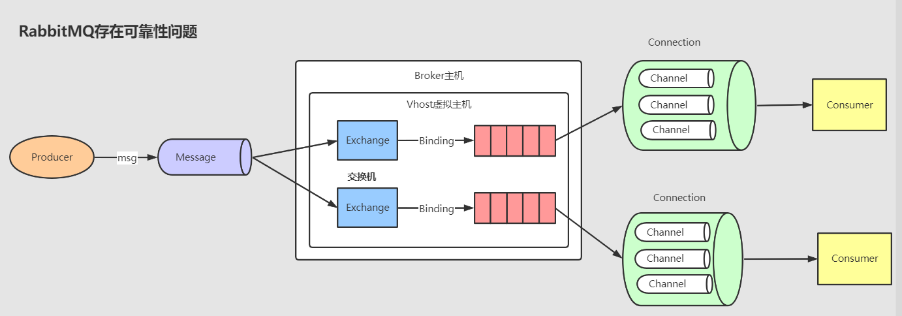
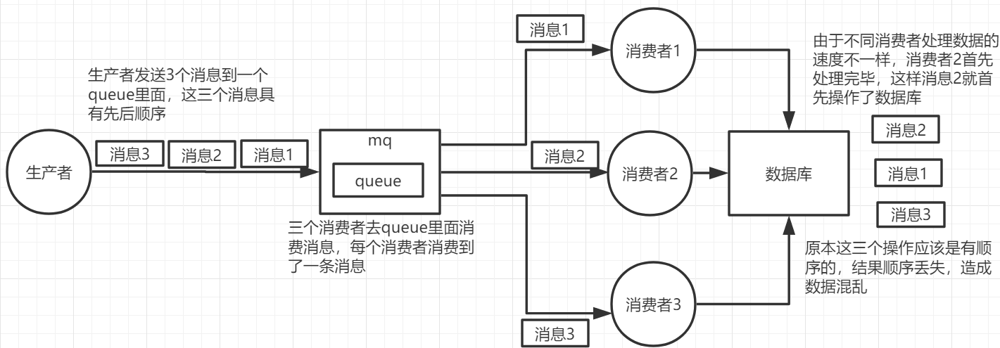
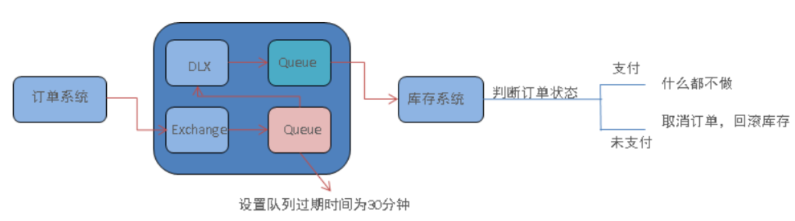

开发实战常见问题分析和解决
一、消息的可靠性分析和解决

RabbitMQ收发消息的时候，有几个主要环节和疑问
- 消息从生产者发送到Broker，生产者把消息发到Broker之后，怎么知道自己的消息是否被接收。
- 消息从Exchange路由到Queue，Exchange是一个绑定列表，职责是分发消息。如果找不到队列或者找不到正确的对垒，怎么处理。
- 消息在Queue中存储，队列有自己的数据库Mnesia，用来存储消息，如果没有被消费会一直存在，如何保证消息在队列中稳定地存储呢？
- 消费者订阅Queue并消费消息，队列是FIFO的，被消费之后删库才投递下一条，Broker如何知道消费者已经接收了消息呢？
1.1 消息发送到Broker
出现失败的原因: 例如设备故障等导致消息发送失败，生产者不能确定Broker有没有正确接收。这就需要给生产者发送消息的接口一个应答。
解决方案： 1) 事务模式 2) Confirm模式
1.2 消息从交换机到路由到队列
导致原因： 什么情况情况下，消息会无法路由到正确的队列？可能因为routingkey错误，或者队列不存在。
解决方案 1）服务端重发生产者 2）交换机路由到另一个备份的交换机。
1.3 消息队列中存储
导致原因： 重启可能导致内存消息消失，这就要把消息本身和元数据（队列，交换机，绑定）都保存到磁盘。
解决方案： 1）队列持久化 2）交换机持久化 3）消息持久化
1.4 消息投递到消费者
1) 自动Ack 2）手动Ack
1.5 消费者回调（根据业务来）
从生产者到Broker，交换机到队列，队列本身，队列到消费者，都有响应的方法知道msg是否正常流转。但是服务端收到ack或者nack之后，生产者知道吗？根据经验是不知道的。但是如果为了保证一致性，生产者必须知道消费者有没有成功消费，怎么办？ 这个是需要从业务层面来进行，两种方式： （1）回调，消费者收到消息，处理完毕后，调用生产者的API。 （2）消费者发送一条响应消息给生产者。
1.6 补偿机制
如果生产者的API没有被调用，也没有收到消费者的响应消息，该如何做？ 这时候可以稍微等一下，可能是消费者处理时间太长或者网络超时，超时之后还没有得到响应的消息才确定为失败，消费失败以后重发消息。 但是问题又来了，谁来发，多久发一次，一共发几次，发一模一样的消息吗？消费者如何进行幂等呢？
谁来发 实际的发送方是业务人员，对于异步操作，发完工作就结束了，所以肯定不是业务发进行重发的。 此时可以创建一个定时任务，找到这些中间状态的记录，查出来之后构建为MQ，重新发送，这种方式用的最多。 其实还有一种情况就是定时执行一直不行之后还是要给上层返回错误的，例如我做的结算系统中就遇到这种情况，如果服务不可用，再重试也无用，此时就需要人员重做结算，此时将失败信息记录起来，然后重新结算。
多久发一次(重复频率) 这个可以由业务根据情况灵活设置，没有固定值，可以按照恒定间隔执行，也可以设置衰减期，例如先一分钟一次，之后2分钟，再5分钟等等。这个可以在定时任务中设置
一共重发几次（重试次数） 这个也可以设置，如果服务不可用而大量发送，会产生大量无效数据导致MQ消息堆积，一般设置为3~5次就够了。 这个要在消息表里记录次数来实现，发一次就加1.
重发什么内容（幂等） 肯定不能发一模一样的消息，不然消费端因为无法区分而导致幂等性问题，至少应该个加个时间戳或者id之类的来区分吧。
不过RabbitMQ除了同一批次的消息有个DeliveryTag外，没有这种完整的防重复设置，也不知道什么才是重复的消息，这需要消费端来处理（用异常队列或者死信队列来做，通常更多的是通过业务端来控制）
二、幂等性
（1）重复消费产生原因：
网络延迟传输中，消费出现异常或者 消息延迟消费，会造成MQ进行重试补偿，在重试过程中可能会造成重复消费，重复消费问题就是幂等性问题
（2）重复消费消息的几种场景
场景1：消费者干的事是拿一条数据往数据库写一条，如果消息重复两次就写了两条，导致数据出错。
解决场景1：同一条消息消息到第二次时判断一下是否已消费过，若是则直接扔掉，一条数据出现两次但是数据库只有一条，这就保证了系统的幂等性
（3）何为幂等性？（官方定义）：
一次和多次请求某资源对于资源本身应该有相同的结果（网络超时除外）。也就是，任意多次执行对资源本身产生的影响均与一次执行的结果相同
（4）解决幂等性（重复消费）的几种业务场景
业务场景1：从生产者拿到个数据后要写库，先根据主键查一下，如果这个数据有了就别插了直接update
业务场景2：如果是写redis的都没问题，因为每次都是set，redis天然的幂等性（）
-- > 写入消息的时候添加消息的ID =>使用redis命令进行setnx 返回是1 =>消费端消费完成后把ID写入redis--> 签收消息 --> 入消息的时候添加消息的ID => 使用redis命令进行setnx 返回是0
业务场景3：需要让生产者发送每条数据的时候加上一个全局唯一的id,消费的时候先根据id去比如redis查一下判断是否消费过，若没有则处理然后这个id写redis,若消费过就不处理
业务场景4：如果数据库有唯一建约束了，插入只会报错，不会导致数据库出现脏数据，本身幂等了
（5）解决决幂等性（重复消费）的几种方法
方法1：唯一ID + 指纹码机制，利用数据库主键去重
思路：根据消息生成一个全局唯一ID,然后加上一个指纹码。指纹码可以系统生成也可以根据某些规则自定义拼接，目的是确定本次才做唯一，将ID+指纹码作为拼接好的值作为主键就可以去重了，在消费消息前先去数据库查看这条消息指纹码是否存在，没有就插入有就忽视。
高并发写数据库性能瓶颈：可以跟进ID进行分库分表策略，采用一些路由算法进行分流，要保证ID通过这种算法消息即使投递多次都落在同一数据库分片上，这样就由单台数据库幂等变成多库的幂等。
方法1：利用Redis的原子性去实现
redis是单线程的，但是性能好也有很多原子性的命令，比如setnx命令，在接收到消息后将消息ID作为key去执行setnx命令，如果执行成功则表示没有执行过这条消息，可以进行消费（setnx命令特点：当且仅当key不存在，将key值设为value值；若key已存在该命令不做任何操作）
方法3：使用全局ID区分消息，解决幂等性（常用）
对于方法3还是以生产者和消费者代码举例：
生产者：在请求头设置消息id（messageId），可以用随机ID比如，也可以用业务逻辑唯一ID
三、顺序消费
1.为什么要保证顺序
消息队列中的若干消息如果是对同一个数据进行操作，这些操作具有前后的关系，必须要按前后的顺序执行，否则就会造成数据异常。举例： 比如通过mysql binlog进行两个数据库的数据同步，由于对数据库的数据操作是具有顺序性的，如果操作顺序搞反，就会造成不可估量的错误。比如数据库对一条数据依次进行了 插入->更新->删除操作，这个顺序必须是这样，如果在同步过程中，消息的顺序变成了 删除->插入->更新，那么原本应该被删除的数据，就没有被删除，造成数据的不一致问题。
3.1. 出现顺序错乱的场景
（1）rabbitmq ①一个queue，有多个consumer去消费，这样就会造成顺序的错误，consumer从MQ里面读取数据是有序的，但是每个consumer的执行时间是不固定的，无法保证先读到消息的consumer一定先完成操作，这样就会出现消息并没有按照顺序执行，造成数据顺序错误。

②一个queue对应一个consumer，但是consumer里面进行了多线程消费，这样也会造成消息消费顺序错误。

3.2. 保证消息的消费顺序
（1）rabbitmq ①拆分多个queue，每个queue一个consumer，就是多一些queue而已，确实是麻烦点；这样也会造成吞吐量下降，可以在消费者内部采用多线程的方式取消费。

②或者就一个queue但是对应一个consumer，然后这个consumer内部用内存队列做排队，然后分发给底层不同的worker来处理

四、延迟队列

五、消息队列选型
1、选型标准
1) 必须开源产品，有BUG才能够自己修复
2) 必须近几年流行，社区活跃很高的,遇到BUG才能解决
3）与周边的生态兼容和集成程度较高
4) 消息传递可靠性 确保消息不丢失 支持集群 有良好的性能且满足大多数的业务场景
5）与团技术栈接轨
第一梯队 RabbitMQ(高并发要求) Kafka(高吞吐) 10W/S RocketMQ（响应速度飞快，可以解决延时，内置一套可靠型消息系统，无中心化设计,国产消息队列）10W/s
第二梯队
ActiveMQ ZeroMQ Plusar
对比队列各种优势根据业务进行选择 ===> 技术选型
===================
文件共享系统（nfs fastdfs）golang